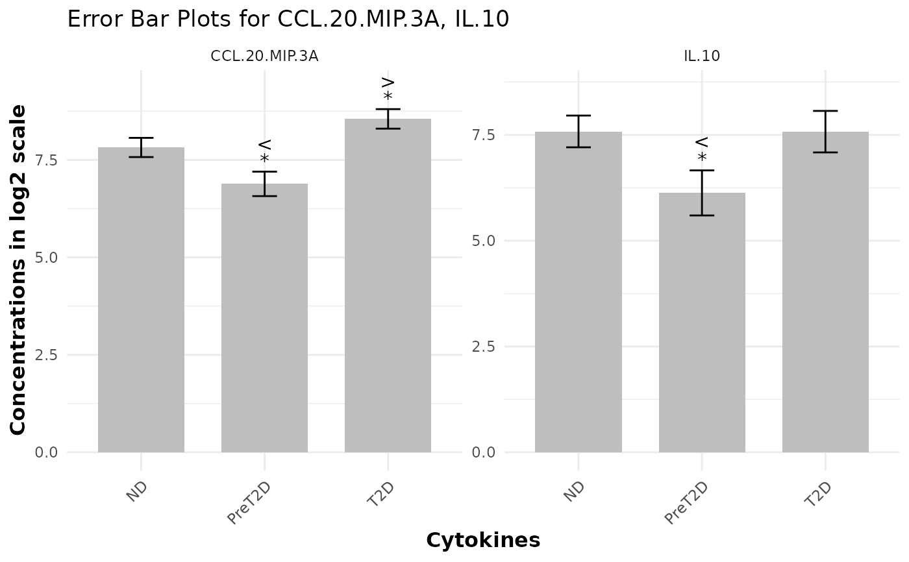

This function generates an error-bar plot to visually compare different groups against a designated baseline group. It displays the central tendency (mean or median) as a bar and overlays error bars to represent the data's spread (e.g., standard deviation, MAD, or standard error). The plot can also include p-value and effect size labels (based on SSMD), presented either as symbols or numeric values, to highlight significant differences and the magnitude of effects.
Usage
cyt_errbp(
data,
group_col = NULL,
p_lab = FALSE,
es_lab = FALSE,
class_symbol = TRUE,
x_lab = "",
y_lab = "",
title = "",
log2 = FALSE,
output_file = NULL
)Arguments
- data
A data frame containing the data for each group. It should include at least one numeric column for the measurements and a column specifying the group membership.
- group_col
Character. The name of the column in
datathat specifies the group membership.- p_lab
Logical. If
TRUE, p-values are displayed on the plot. Default isFALSE.- es_lab
Logical. If
TRUE, effect sizes (SSMD) are displayed on the plot. Default isFALSE.- class_symbol
Logical. If
TRUE, significance and effect size are represented using symbolic notation (e.g., *, **, >, <<). IfFALSE, numeric values are used. Default isTRUE.- x_lab
Character. Label for the x-axis. If not provided, defaults to the name of the
group_color "Group" ifgroup_colisNULL.- y_lab
Character. Label for the y-axis. If not provided, defaults to "Value".
- title
Character. Title of the plot. If not provided, a default title is generated based on the measured variables.
- log2
Logical. If
TRUE, a log2 transformation (with a +1 offset) is applied to all numeric columns before analysis. Default isFALSE.- output_file
Character. The file path to save the plot as a PDF. If
NULL, the plot is displayed but not saved. Default isNULL.
Value
An error-bar plot (a ggplot object) is produced and optionally
saved as a PDF. If output_file is specified, the function returns
returns the ggplot object.
Details
The function performs the following steps:
Optionally applies a log2 transformation to numeric data.
Determines the baseline group (the first level of
group_col).Calculates summary statistics (sample size, mean, standard deviation) for each group and each numeric variable.
Performs t-tests to compare each group against the baseline for each numeric variable.
Computes effect sizes (SSMD) for each group compared to the baseline.
Generates a faceted error-bar plot, with one facet per numeric variable.
Optionally adds p-value and effect size labels to the plot.
Optionally saves the plot as a PDF.
Examples
data <- ExampleData1
cyt_errbp(data[,c("Group", "CCL.20.MIP.3A", "IL.10")], group_col = "Group",
p_lab = TRUE, es_lab = TRUE, class_symbol = TRUE, x_lab = "Cytokines",
y_lab = "Concentrations in log2 scale", log2 = TRUE)
